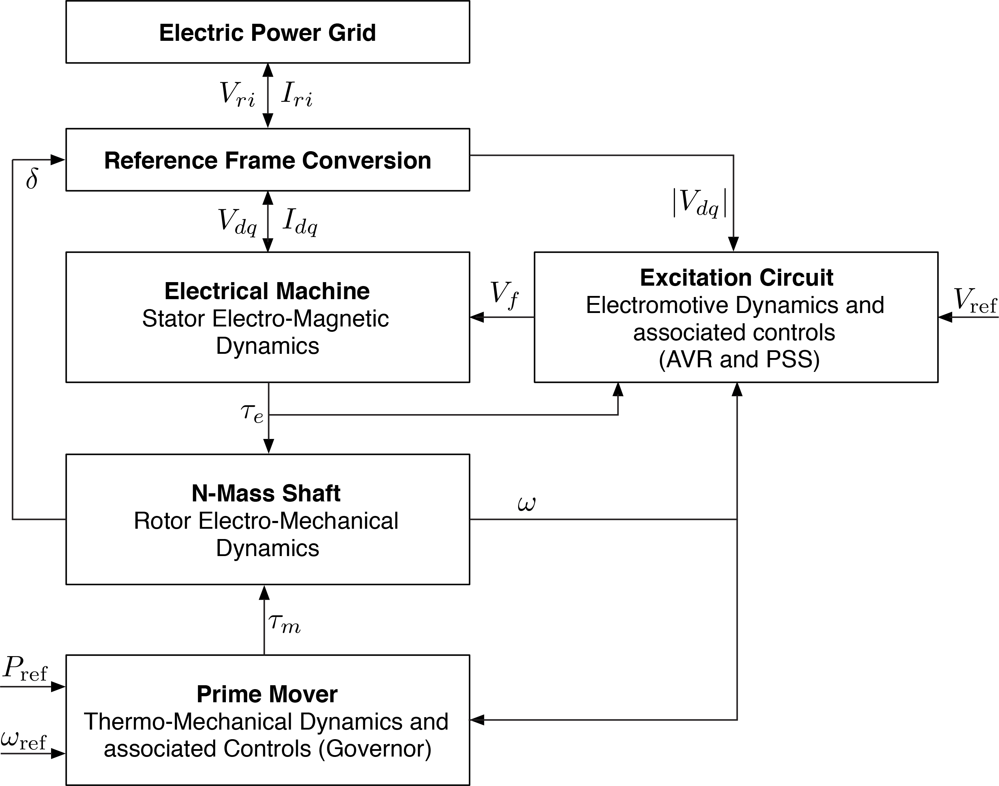

Generator Models
Here we discuss the structure and models used to model generators in LITS.jl. Each generator is a data structure that is defined by the following components:
- Machine: That defines the stator electro-magnetic dynamics.
- Shaft: That describes the rotor electro-mechanical dynamics.
- Automatic Voltage Regulator: Electromotive dynamics to model an AVR controller.
- Power System Stabilizer: Control dynamics to define an stabilization signal for the AVR.
- Prime Mover and Turbine Governor: Thermo-mechanical dynamics and associated controllers.
The following figure summarizes the components of a generator and which variables they share:
⠀
Each generator is defined in its own $dq$ reference frame. Let $\delta$ be the rotor angle of the generator. If $v_r + jv_i = v_h\angle \theta$ defines the voltage in the bus in the network reference frame $RI$ rotating at nominal frequency $\Omega_b$, then the following equations (both are equivalent) can be used to convert between reference frames:
Models are based from Federico Milano's book: "Power System Modelling and Scripting" and Prabha Kundur's book: "Power System's Stability and Control"
Machines
The machine component describes the stator-rotor electromagnetic dynamics.
Classical Model (Zero Order)
This is the classical order model that does not have differential equations in its machine model ($\delta$ and $\omega$ are defined in the shaft):
One d- One q- Model (2th Order)
This model includes two transient emf with their respective differential equations:
Marconato Machine (6th Order)
The Marconato model defines 6 differential equations, two for stator fluxes and 4 for transient and subtransient emfs:
with
Simplified Marconato Machine (4th Order)
This model neglects the derivative of stator fluxes ($\dot{\psi}_d$ and $\dot{\psi}_q$) and assume that the rotor speed stays close to 1 pu ($\omega\psi_{d}=\psi_{d}$ and $\omega\psi_{q}=\psi_{q}$) that allows to remove the stator fluxes variables from the Marconato model.
with
Anderson-Fouad Machine (6th Order)
The Anderson-Fouad model also defines 6 differential equations, two for stator fluxes and 4 for transient and subtransient emfs and is derived from the Marconato model by defining $\gamma_d \approx \gamma_q \approx T_{AA} \approx 0$:
Simplified Anderson-Fouad Machine (4th Order)
Similar to the Simplified Marconato Model, this model neglects the derivative of stator fluxes ($\dot{\psi}_d$ and $\dot{\psi}_q$) and assume that the rotor speed stays close to 1 pu ($\omega \psi_d = \psi_d$ and $\omega \psi_q = \psi_q$) that allows to remove the stator fluxes variables from the model:
Rotor Fluxes Model (5th Order)
This models describes a machine model using 2 stator fluxes $\psi_d$ and $\psi_q$, the rotor field flux $\psi_f$, the d-axis damping $\psi_{1d}$ and only one q-axis damping circuit $\psi_{1q}$:
Shafts
The shaft component defines the rotating mass of the synchronous generator.
Rotor Mass Shaft
This is the standard model, on which one single mass (typically the rotor) is used to model the entire inertia of the synchronous generator. Each generator's rotating frame use a reference frequency $\omega_s$, that typically is the synchronous one (i.e. $\omega_s = 1.0$). The model defines two differential equations for the rotor angle $\delta$ and the rotor speed $\omega$:
Five-Mass Shaft
This model describes model connecting a high-pressure (hp) steam turbine, intermediate-pressure (ip) steam turbine, low-pressure (lp) steam pressure, rotor and exciter (ex) connected in series (in that order) in the same shaft using a spring-mass model:
Automatic Voltage Regulators (AVR)
AVR are used to determine the voltage in the field winding $v_f$ in the model.
Fixed AVR
This is a simple model that set the field voltage to be equal to a desired constant value $v_f = v_{\text{fix}}$.
Simple AVR
This depicts the most basic AVR, on which the field voltage is an integrator over the difference of the measured voltage and a reference:
AVR Type I
This AVR is a simplified version of the IEEE DC1 AVR model:
with the ceiling function:
AVR Type II
This model represents a static exciter with higher gains and faster response than the Type I:
with
Power System Stabilizers (PSS)
PSS are used to add an additional signal $v_s$ to the field voltage: $v_f = v_f^{\text{avr}} + v_s$.
Fixed PSS
This is a simple model that set the stabilization signal to be equal to a desired constant value $v_s = v_{s}^{\text{fix}}$. The absence of PSS can be modelled using this component with $v_s^{\text{fix}} = 0$.
Simple PSS
This is the most basic PSS that can be implemented, on which the stabilization signal is simply a proportional controller over the frequency and electrical power:
Prime Movers and Turbine Governors (TG)
This section describes how mechanical power is modified to provide primary frequency control with synchronous generators. It is assumed that $\tau_{\text{ref}} = P_{\text{ref}}$ since they are decided at nominal frequency $\omega = 1$.
Fixed TG
This a simple model that set the mechanical torque to be equal to a proportion of the desired reference $\tau_m = \eta P_{\text{ref}}$. To set the mechanical torque to be equal to the desired power, the value of $\eta$ is set to 1.
TG Type I
This turbine governor is described by a droop controller and a low-pass filter to model the governor and two lead-lag blocks to model the servo and reheat of the turbine governor.
with
TG Type II
This turbine governor is a simplified model of the Type I.
Reference
LITS.BaseMachine — TypeParameters of 0-states synchronous machine: Classical Model
Conmutable structor
BaseMachine(R, Xd_p, eq_p, MVABase)Arguments
R::Float64 : Resistance after EMF in machine per unitXd_p::Float64 : Reactance after EMF in machine per uniteq_p::Float64 : Fixed EMF behind the impedanceMVABase::Float64 : Nominal Capacity in MVA
LITS.OneDOneQMachine — TypeParameters of 2-states synchronous machine: One d- and One q-Axis Model
Conmutable structor
OneDOneQMachine(R, Xd, Xq, Xd_p, Xq_pp, Td0_p, Tq0_pp, MVABase)Arguments
R::Float64Xd::Float64Xq::Float64Xd_p::Float64 : Reactance after EMF in machine per unitXq_pp::Float64Td0_p::Float64 : Time constant of transient d-axis voltageTq0_pp::Float64 : Time constant of subtransient q-axis voltageMVABase::Float64 : Nominal Capacity in MVA
LITS.MarconatoMachine — TypeParameters of 6-states synchronous machine: Marconato model
Conmutable structor
MarconatoMachine(R, Xd, Xq, Xd_p, Xq_p, Xd_pp, Xq_pp, Td0_p, Tq0_p, Td0_pp, Tq0_pp, T_AA, MVABase)Arguments
R::Float64 : Resistance after EMF in machine per unitXd::Float64 : Reactance after EMF in d-axis per unitXq::Float64 : Reactance after EMF in q-axis per unitXd_p::Float64 : Transient reactance after EMF in d-axis per unitXq_p::Float64 : Transient reactance after EMF in q-axis per unitXd_pp::Float64 : Subtransient reactance after EMF in d-axis per unitXq_pp::Float64 : Subtransient reactance after EMF in q-axis per unitTd0_p::Float64 : Time constant of transient d-axis voltageTq0_p::Float64 : Time constant of transient q-axis voltageTd0_pp::Float64 : Time constant of subtransient d-axis voltageTq0_pp::Float64 : Time constant of subtransient q-axis voltageT_AA::Float64 : Time constant of d-axis additional leakageMVABase::Float64 : Nominal Capacity in MVA
LITS.SimpleMarconatoMachine — TypeParameters of 4-states synchronous machine: Simplified Marconato model The derivative of stator fluxes (ψd and ψq) is neglected and ωψd = ψd and ωψq = ψq is assumed (i.e. ω=1.0). This is standard when transmission network dynamics is neglected.
Conmutable structor
SimpleMarconatoMachine(R, Xd, Xq, Xd_p, Xq_p, Xd_pp, Xq_pp, Td0_p, Tq0_p, Td0_pp, Tq0_pp, T_AA, MVABase)Arguments
R::Float64 : Resistance after EMF in machine per unitXd::Float64 : Reactance after EMF in d-axis per unitXq::Float64 : Reactance after EMF in q-axis per unitXd_p::Float64 : Transient reactance after EMF in d-axis per unitXq_p::Float64 : Transient reactance after EMF in q-axis per unitXd_pp::Float64 : Subtransient reactance after EMF in d-axis per unitXq_pp::Float64 : Subtransient reactance after EMF in q-axis per unitTd0_p::Float64 : Time constant of transient d-axis voltageTq0_p::Float64 : Time constant of transient q-axis voltageTd0_pp::Float64 : Time constant of subtransient d-axis voltageTq0_pp::Float64 : Time constant of subtransient q-axis voltageT_AA::Float64 : Time constant of d-axis additional leakageMVABase::Float64 : Nominal Capacity in MVA
LITS.AndersonFouadMachine — TypeParameters of 6-states synchronous machine: Anderson-Fouad model
Conmutable structor
AndersonFouadMachine(R, Xd, Xq, Xd_p, Xq_p, Xd_pp, Xq_pp, Td0_p, Tq0_p, Td0_pp, Tq0_pp, MVABase)Arguments
R::Float64 : Resistance after EMF in machine per unitXd::Float64 : Reactance after EMF in d-axis per unitXq::Float64 : Reactance after EMF in q-axis per unitXd_p::Float64 : Transient reactance after EMF in d-axis per unitXq_p::Float64 : Transient reactance after EMF in q-axis per unitXd_pp::Float64 : Subtransient reactance after EMF in d-axis per unitXq_pp::Float64 : Subtransient reactance after EMF in q-axis per unitTd0_p::Float64 : Time constant of transient d-axis voltageTq0_p::Float64 : Time constant of transient q-axis voltageTd0_pp::Float64 : Time constant of subtransient d-axis voltageTq0_pp::Float64 : Time constant of subtransient q-axis voltageMVABase::Float64 : Nominal Capacity in MVA
LITS.SimpleAFMachine — TypeParameters of 4-states simplified Anderson-Fouad (SimpleAFMachine) model. The derivative of stator fluxes (ψd and ψq) is neglected and ωψd = ψd and ωψq = ψq is assumed (i.e. ω=1.0). This is standard when transmission network dynamics is neglected. If transmission dynamics is considered use the full order Anderson Fouad model.
Conmutable structor
SimpleAFMachine(R, Xd, Xq, Xd_p, Xq_p, Xd_pp, Xq_pp, Td0_p, Tq0_p, Td0_pp, Tq0_pp, MVABase)Arguments
R::Float64 : Resistance after EMF in machine per unitXd::Float64 : Reactance after EMF in d-axis per unitXq::Float64 : Reactance after EMF in q-axis per unitXd_p::Float64 : Transient reactance after EMF in d-axis per unitXq_p::Float64 : Transient reactance after EMF in q-axis per unitXd_pp::Float64 : Subtransient reactance after EMF in d-axis per unitXq_pp::Float64 : Subtransient reactance after EMF in q-axis per unitTd0_p::Float64 : Time constant of transient d-axis voltageTq0_p::Float64 : Time constant of transient q-axis voltageTd0_pp::Float64 : Time constant of subtransient d-axis voltageTq0_pp::Float64 : Time constant of subtransient q-axis voltageMVABase::Float64 : Nominal Capacity in MVA
LITS.FullMachine — TypeParameter of a full order flux stator-rotor model without zero sequence flux in the stator. The derivative of stator fluxes (ψd and ψq) is NOT neglected. Only one q-axis damping circuit is considered. All parameters are in machine per unit.
Refer to Chapter 3 of Power System Stability and Control by P. Kundur or Chapter 11 of Power System Dynamics: Stability and Control, by J. Machowski, J. Bialek and J. Bumby, for more details. Note that the models are somewhat different (but equivalent) due to the different Park Transformation used in both books.
Conmutable structor
FullMachine(R, R_f, R_1d, R_1q, L_d, L_q, L_ad, L_aq, L_f1d, L_f, L_1d, L_1q)Arguments
R::Float64 : Stator resistance after EMF in per unitR_f::Float64 : Field rotor winding resistance in per unitR_1d::Float64 : Damping rotor winding resistance on d-axis in per unit. This value is denoted as RD in Machowski.R_1q::Float64 : Damping rotor winding resistance on q-axis in per unit. This value is denoted as RQ in Machowski.L_d::Float64 : Inductance of fictitious damping that represent the effect of the three-phase stator winding in the d-axis of the rotor, in per unit. This value is denoted as Lad + Ll in Kundur (and Ld in Machowski).L_q::Float64 : Inductance of fictitious damping that represent the effect of the three-phase stator winding in the q-axis of the rotor, in per unit. This value is denoted as Laq + Ll in Kundur.L_ad::Float64 : Mutual inductance between stator winding and rotor field (and damping) winding inductance on d-axis, in per unitL_aq::Float64 : Mutual inductance between stator winding and rotor damping winding inductance on q-axis, in per unitL_f1d::Float64 : Mutual inductance between rotor field winding and rotor damping winding inductance on d-axis, in per unitL_ff::Float64 : Field rotor winding inductance, in per unitL_1d::Float64 : Inductance of the d-axis rotor damping circuit, in per unitL_1q::Float64 : Inductance of the q-axis rotor damping circuit, in per unitMVABase::Float64 : Nominal Capacity in MVA
LITS.SingleMass — TypeParameters of single mass shaft model. Typically represents the rotor mass.
Conmutable structor
SingleMass(H, D)Arguments
H::Float64 : Rotor inertia constant in MWs/MVAD::Float64 : Rotor natural damping in pu
LITS.FiveMassShaft — TypeParameters of 5 mass-spring shaft model. It contains a High-Pressure (HP) steam turbine, Intermediate-Pressure (IP) steam turbine, Low-Pressure (LP) steam turbine, the Rotor and an Exciter (EX) mover.
Conmutable structor
FiveMassShaft(H, H_hp, H_ip, H_lp, H_ex,
D, D_hp, D_ip, D_lp, D_ex,
D_12, D_23, D_34, D_45,
K_hp, K_ip, K_lp, K_ex)Arguments
H::Float64 : Rotor inertia constant in MWs/MVAH_hp::Float64 : High pressure turbine inertia constant in MWs/MVAH_ip::Float64 : Intermediate pressure turbine inertia constant in MWs/MVAH_lp::Float64 : Low pressure turbine inertia constant in MWs/MVAH_ex::Float64 : Exciter inertia constant in MWs/MVAD::Float64 : Rotor natural damping in puD_hp::Float64 : High pressure turbine natural damping in puD_ip::Float64 : Intermediate pressure turbine natural damping in puD_lp::Float64 : Low pressure turbine natural damping in puD_ex::Float64 : Exciter natural damping in puD_12::Float64 : High-Intermediate pressure turbine dampingD_23::Float64 : Intermediate-Low pressure turbine dampingD_34::Float64 : Low pressure turbine-Rotor dampingD_45::Float64 : Rotor-Exciter dampingK_hp::Float64 : High pressure turbine angle coefficientK_ip::Float64 : Intermediate pressure turbine angle coefficientK_lp::Float64 : Low pressure turbine angle coefficientK_ex::Float64 : Exciter angle coefficient
LITS.AVRFixed — TypeParameters of a AVR that returns a fixed voltage to the rotor winding:
Conmutable structor
AVRFixed(Emf)Arguments
Emf::Float64 : Fixed voltage to the rotor winding
LITS.AVRSimple — TypeParameters of a simple proportional AVR in the derivative of EMF i.e. an integrator controller on EMF
Conmutable structor
AVRSimple(Kv)#Arguments
Kv::Float64 : Integral Gain
LITS.AVRTypeI — TypeParameters of an Automatic Voltage Regulator Type I - Resembles IEEE Type DC1
Conmutable structor
AVRTypeI(Ka, Ke, Kf, Ta, Tf, Te, Tr, Vr_max, Vr_min, Ae, Be)Arguments
Ka::Float64 : Amplifier GainKe::Float64 : Field circuit integral deviationKf::Float64 : Stabilizer Gain in s * pu/puTa::Float64 : Amplifier Time Constant in sTe::Float64 : Field Circuit Time Constant in sTf::Float64 : Stabilizer Time Constant in sTr::Float64 : Voltage Measurement Time Constant in sVr_max::Float64 : Maximum regulator voltage in puVr_min::Float64 : Minimum regulator voltage in puAe::Float64 : 1st ceiling coefficientBe::Float64 : 2nd ceiling coefficient
LITS.AVRTypeII — TypeParameters of an Automatic Voltage Regulator Type II - Typical static exciter model
Conmutable structor
AVRTypeII(K0, T1, T2, T3, T4, Te, Tr, Vr_max, Vr_min, Ae, Be)Arguments
K0::Float64 : Regulator GainT1::Float64 : First Pole in sT2::Float64 : First zero in sT3::Float64 : First Pole in sT4::Float64 : First zero in sTe::Float64 : Field Circuit Time Constant in sTr::Float64 : Voltage Measurement Time Constant in sVr_max::Float64 : Maximum regulator voltage in puVr_min::Float64 : Minimum regulator voltage in puAe::Float64 : 1st ceiling coefficientBe::Float64 : 2nd ceiling coefficient
LITS.PSSFixed — TypeParameters of a PSS that returns a fixed voltage to add to the reference for the AVR
Conmutable structor
PSSFixed(Vs)Arguments
Vs::Float64 : Fixed voltage stabilization signal
LITS.PSSSimple — TypeParameters of a PSS that returns a proportional droop voltage to add to the reference for the AVR
Conmutable structor
PSSSimple(K_ω, K_p)Arguments
K_ω::Float64 : Proportional gain for frequencyK_p::Float64 : Proportional gain for active power
LITS.TGFixed — TypeParameters of a fixed Turbine Governor that returns a fixed mechanical torque given by the product of P_ref*efficiency
Conmutable structor
TGFixed(efficiency)Arguments
efficiency::Float64 : Efficiency factor that multiplies P_ref
LITS.TGTypeI — TypeParameters of a Turbine Governor Type I.
Conmutable structor
TGTypeI(R, Ts, Tc, T3, T4, T5, P_min, P_max)Arguments
R::Float64 : Droop parameterTs::Float64 : Governor time constantTc::Float64 : Servo time constantT3::Float64 : Transient gain time constantT4::Float64 : Power fraction time constantT5::Float64 : Reheat time constantP_min::Float64 : Min Power into the GovernorP_max::Float64 : Max Power into the Governor
LITS.TGTypeII — TypeParameters of a Turbine Governor Type II.
Conmutable structor
TGTypeI(R, T1, T2, τ_min, τ_max)Arguments
R::Float64 : Droop parameterT1::Float64 : Transient gain time constantT2::Float64 : Governor time constantτ_min::Float64 : Min turbine torque outputτ_max::Float64 : Max turbine torque output